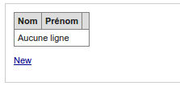

Episode 3: Builder: CRUD listage
I. Introduction
Dans cet épisode, nous allons générer un module CRUD.C pour Create, R pour Read, U pour Update et D pour Delete
Ce sont les 4 actions que nous effectuons sur une base de données: on liste les enregistrements, on permet d'ajouter, modifier et de supprimer ceux-ci.
Lors du précédent épisode, nous avons généré la classe modèle. En effet ce framework s'appuie sur une architecture MVC: Modèle Vue Controlleur.
Modèle pour accéder aux données, Vue pour afficher celle-ci et le Controller pour faire le chef d'orchestre.
II. La couche modèle
On utilisera la couche modèle précédement générée:III. Passons au builder
Dans le builder, il y a une catégorie "module", dans celle-ci nous pouvons crééer:- un simple module
- un module CRUD
- un module en lecture seule
- un module d'authentification
- un module d'authentification avec inscription
- un gestionnaire de droits
Cliquez sur "Créer un module CRUD"
Le builder vous liste les classes modèle de votre projet, en effet, il va s'appuyer dessus pour générer votre module CRUD
IV. Module CRUD auteur
Nous allons commencer par auteur, cliquez sur "model_auteur.php"Comme vous pouvez le voir, vous avez un formulaire de génération vous permettant de personnaliser la génération de ce module CRUD.
Vous pouvez choisir le nom du module, vous pouvez choisir les actions/pages à générer.
C'est interessant de pouvoir par exemple générer uniquement "ajout", ainsi on aura un tableau listant les enregistrements avec un lien pour en ajouter, un peu comme pour des commentaires: on peut les lister et en ajouter mais ni les modifier, ni les supprimer.
Ensuite pour chaque champs, on peut préciser le libellé du champ, ici on va préciser "Nom" et "Prénom" pour nos champs.
Générez.
Le builder vous indique avoir créer un répertoire module/auteurs avec un sous répertoire view
Ce module contient un fichier main.php et son sous répertoire view des fichiers de vues
Notez également, qu'il y a un lien permettant d'afficher le module ainsi généré, en cliquant dessus

Vous avez bien votre tableau qui liste les enregistrements, vous pouvez cliquez sur new pour ajouter
Note: vous voyez bien sur les libellés du tableau et du formulaire les valeurs renseignées "Nom" et "Prénom"
Vous voyez le tableau rempli
Vous pouvez afficher, éditer ou supprimer les enregistrements.
Note: pour les suppression, nous n'avons pas un simple lien avec confirmation javascript mais une page de formulaire dédiée pour éviter la faille xsrf.
Je vous invite à en lire plus sur le sujet http://fr.wikipedia.org/wiki/Cross-Site_Request_Forgery
IV. Zoom sur la partie listage
Si on ouvre le fichier main.php du module "auteurs":
<?php
class module_auteurs extends abstract_module{
public function before(){
$this->oLayout=new _layout('template1');
//$this->oLayout->addModule('menu','menu::index');
}
public function _index(){
//on considere que la page par defaut est la page de listage
$this->_list();
}
public function _list(){
$tAuteur=model_auteur::getInstance()->findAll();
$oView=new _view('auteurs::list');
$oView->tAuteur=$tAuteur;
$this->oLayout->add('main',$oView);
}
(...)
}
Si on regarde ce layout (layout/template1.php)
<!DOCTYPE HTML PUBLIC "-//W3C//DTD HTML 4.01 Transitional//EN" "http://www.w3.org/TR/html4/loose.dtd">
<html>
<head>
<title>test</title>
<link rel="stylesheet" type="text/css" href="css/main.css" media="screen" />
<script src="js/main.js" type="text/javascript"></script>
<link rel="alternate" type="application/rss+xml" title="RSS" href="<?php echo _root::getLink('article::newsrss') ?>"/>
<meta http-equiv="Content-Type" content="text/html; charset=utf-8"/>
</head>
<body>
<div class="main">
<div class="menu"><?php echo $this->load('menu') ?></div>
<div class="content">
<?php echo $this->load('main') ?>
</div>
</div>
</body>
</html>
Revenons à notre module, après avoir appelé before() qui instancie le layout, on appelle ensuite l'action list (méthode _list() )
public function _list(){
//on recupere le tableau des auteurs
$tAuteur=model_auteur::getInstance()->findAll();
//on instancie la vue module/auteurs/view/list.php
$oView=new _view('auteurs::list');
//on assigne le tableau tAuteur a notre vue
$oView->tAuteur=$tAuteur;
//on ajoute au layout a l'emplacement "main" notre vue
$this->oLayout->add('main',$oView);
}
Si on va voir la vue en question:
<table class="tb_list">
<tr>
<th>Nom</th>
<th>Prénom</th>
<th></th>
</tr>
<?php if($this->tAuteur):?>
<?php foreach($this->tAuteur as $oAuteur):?>
<tr <?php echo plugin_tpl::alternate(array('','class="alt"'))?>>
<td><?php echo $oAuteur->nom ?></td>
<td><?php echo $oAuteur->prenom ?></td>
<td>
<a href="<?php echo $this->getLink('auteurs::edit',array(
'id'=>$oAuteur->getId()
)
)?>">Edit</a>
|
<a href="<?php echo $this->getLink('auteurs::delete',array(
'id'=>$oAuteur->getId()
)
)?>">Delete</a>
|
<a href="<?php echo $this->getLink('auteurs::show',array(
'id'=>$oAuteur->getId()
)
)?>">Show</a>
</td>
</tr>
<?php endforeach;?>
<?php else:?>
<tr>
<td colspan="3">Aucune ligne</td>
</tr>
<?php endif;?>
</table>
<p><a href="<?php echo $this->getLink('auteurs::new') ?>">New</a></p>
Note: vous voyez comment créer des liens, vous pouvez utiliser deux méthodes:
_root::getLink('auteurs::show',array('id'=>$oAuteur->getId()) )
$this->getLink('auteurs::show',array('id'=>$oAuteur->getId()) )
Dans notre exemple, le couple module::action, c'est "auteurs::show", et le tableau de paramètre qui contient l'id de l'auteur à afficher.